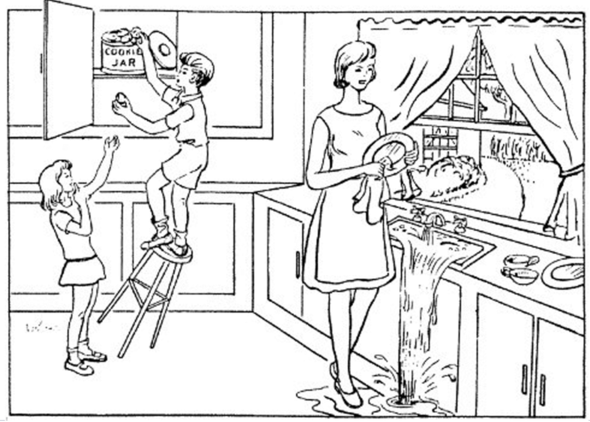

<!DOCTYPE html>
<html>

<head>
    <title>Experimento CookieJar</title>
    <meta charset="UTF-8">
    <script src="https://unpkg.com/jspsych@8.2.3"></script>
    <script src="https://unpkg.com/@jspsych/plugin-html-button-response@2.0.0"></script>
    <script src="https://unpkg.com/@jspsych/plugin-fullscreen@2.0.0"></script>
    <link href="https://unpkg.com/jspsych@8.2.3/css/jspsych.css" rel="stylesheet">
</head>

<body>
    <script>

        const jsPsych = initJsPsych();

        const consentimiento = {
            type: jsPsychHtmlButtonResponse,
            stimulus: '<h2>Consentimiento aca</h2>',
            choices: ['Siguiente']
        }

        const bienvenida = {
            type: jsPsychHtmlButtonResponse,
            stimulus: /*html*/ `
        <h2>¡Te damos la bienvenida al experimento!</h2>
        <h3>Para evitar distracciones te pedimos que: </h3> 
        <p>1. Cierres otras pesatañas y aplicaciones que generen notificaciones</p>
        <p>2. Pongas el telefono en modo no molestar</p>
        <p>3. Minimices distracciones de tu entorno, intenando estar en un lugar tranquilo</p>
        `,
            choices: ['Siguiente']
        }

        const pantalla = {
            type: jsPsychFullscreen,
            fullscreen_mode: true,
            message: '<h3>El experimento ira a pantalla completa cuando presiones el boton que se encuentra abajo</h3>',
            button_label: 'Ir a pantalla completa'
        }

        const calibracion = {
            type: jsPsychHtmlButtonResponse,
            stimulus: /*html*/ `
        <h2>Verificación de micrófono</h2>
        <p>Hablá en voz alta y fijate que la barra se mueva. Si la barra no se mueve intenta hablar un poco mas fuerte.</p> 
        <div style="width: 600px; margin: 20px auto;">
        <div id="barra-container" style="background: #eee; border-radius: 8px; height: 50px; overflow: hidden;">
            <div id="barra-audio" style="height: 100%; width: 0%; background: green; transition: width 0.1s;"></div>
        </div>
        </div>
        <p>Intenta mantener este volumen de voz durante todo el experimento</p>

        <br> 

        <h2>Verificación de cámara</h2>
        <p>Asegurate que tu cara este en el cuadrado verde que aparece en la pantalla de abajo e intenta no moverte
            mucho durante el experimento</p>
            
            <div 
            id="contenedor-camara"
            style="
            position: relative;
            width: 600px;
            height: 375px;
            margin: 0 auto;
            background: #ddd;
            border-radius: 8px;
            overflow: hidden;
            "
            >

                <video 
                    id="preview-camara" 
                    autoplay 
                    muted 
                    playsinline
                    style="
                        width: 100%;
                        height: 100%;
                        object-fit: cover;
                        visibility: hidden;
                    ">
                </video>

        <div 
            id="cuadrado-camara" 
            style="
                position: absolute;
                top: 50%;
                left: 50%;
                width: 300px;
                height: 300px;
                border: 4px solid green;
                transform: translate(-50%, -50%);
                border-radius: 10px;
                pointer-events: none;
                display: none;
            ">
        </div>
    </div>

        <p id="estado-mic-cam" style="color: gray;">Iniciando micrófono y camara...</p>
        <button id="btn-calibracion" class="jspsych-btn" disabled>
             Calibración de audio y cámara lista
        </button>
    `,
            choices: [],

            on_load: function () {
                navigator.mediaDevices.getUserMedia({ audio: true, video: true })
                    .then(function (stream) {
                        document.getElementById('estado-mic-cam').textContent = 'Micrófono y camara activos.';
                        document.getElementById('estado-mic-cam').style.color = 'green';
                        document.getElementById('btn-calibracion')
                            .addEventListener('click', function () {
                                jsPsych.finishTrial();
                            });

                        const video = document.getElementById('preview-camara');
                        video.srcObject = stream;
                        video.onloadedmetadata = function () {
                            video.style.visibility = 'visible';
                            document.getElementById('cuadrado-camara').style.display = 'block';
                        };

                        const audioContext = new AudioContext();
                        const source = audioContext.createMediaStreamSource(stream);
                        const analyser = audioContext.createAnalyser();
                        analyser.fftSize = 256;
                        source.connect(analyser);

                        const dataArray = new Uint8Array(analyser.frequencyBinCount);
                        
                        // Calibracion del audio
                        function updateBar() {
                            analyser.getByteFrequencyData(dataArray);

                            // Promedio de volumen de todo sonido captado por el microfono
                            let sum = 0;
                            for (let i = 0; i < dataArray.length; i++) {
                                sum += dataArray[i];
                            }
                            const promedio = sum / dataArray.length;

                            // Promedio de sonidos - tratando de account for el ruioo de fondo
                            const porcentaje = Math.max(0, Math.min((promedio - 40) * 3, 100)); //Fijarse si el 40 sirve

                            document.getElementById('barra-audio').style.width = porcentaje + '%';

                            //Habilitar boton si el promedio se mueve bien con la voz
                            if (porcentaje > 40) {
                                document.getElementById('btn-calibracion').disabled = false;
                            }

                            requestAnimationFrame(updateBar);
                        }
                        updateBar();
                    })
                    .catch(function () {
                        document.getElementById('estado-mic-cam').textContent = 'No se pudo acceder al micrófono y/o la camara. Revisá los permisos.';
                        document.getElementById('estado-mic-cam').style.color = 'red';
                    });
            }
        }

        const instrucciones = {
            type: jsPsychHtmlButtonResponse,
            stimulus: /*html*/ `
        <h2>Instrucciones</h2>
        <h3>Tu tarea principal sera describir lo que ves en las imagenes con el mayor detalle posible en 1 minuto</h3> 
        <p>1. Presioná <b>Grabar</b> y describí lo que ves.</p>
        <p>2. Cuando termines, presioná <b>Parar</b>. Esto va a parar la grabacion y enviarla</p>
        <p>3. Presioná <b>Siguiente</b> para pasar a la siguiente imagen.</p>
    `, // cambiar el tiempo
            choices: ['Entendido, continuar']
        }

        const lamina_original = { // aca hay que grabar el audio y el video - deberia grabarlo en conjunto o separado??
            type: jsPsychHtmlButtonResponse,
            stimulus: /*html*/ `
        <h2>Imagen a Describir 1 </h2>
        <p> Recorda que tenes un minuto para describir todo lo que ves. La grabacion va a parar autoomaticamente una vez alcanzado
            este tiempo</p>
        
    `, // cambiar el tiempo
            choices: ['Enviar']
        }

        const fin = {
            type: jsPsychHtmlButtonResponse,
            stimulus: '<h1>¡Muchas gracias!</h1><p>Tus respuestas fueron guardadas.</p>',
            choices: []
        }

        jsPsych.run([consentimiento, bienvenida, pantalla, calibracion, instrucciones, lamina_original, fin]);
    </script>
</body>

</html>